Your spells blaze brighter, but your body is fragile.
- 40% more Spell Damage
- 30% less maximum Life
- Found on
- Intelligence side of the web
Keystones and the clusters of the passive web.
The passive web has 594 nodes. Each class starts at its own point on the rim, on the side of its attributes, and spends a point per level (plus quest rewards) to walk inwards. Clusters group small nodes around notables; keystones change the rules of a build and always come with a cost.
Every node shows a painted emblem. Each keystone, notable and class start has one of its own, and a cluster's small nodes share their cluster's emblem (in the Elemental Wards, each shows its element). The rings of the backbone that join the clusters carry a jewel for the attribute, or pair of attributes, that each node gives, and one node in six on them is a minor passive marked by what it gives. A node you have not taken waits greyed, brightens once it is in reach or on the path you are planning, and shows in full colour once taken. Notables wear a studded double frame and keystones a spiked crown.
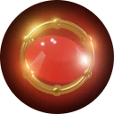
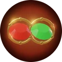
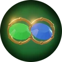
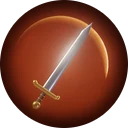
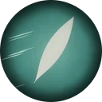
Your spells blaze brighter, but your body is fragile.
Nothing moves you, including your own legs.
Steel becomes flame; flame remembers you.
Skills cost Life instead of Mana.
Your Ward doubles while your flesh withers.
You never strike critically, but every blow counts.
Stand still and strike true.
More servants, each a little weaker.
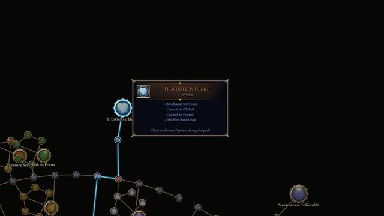
Every lightning strike shocks; you are a lightning rod too.
Cold cannot touch you; fire finds you easily.
Your blades weep poison.
Defense first, always.
Light feet, light frame.
All your skills resonate one level higher, at a price.
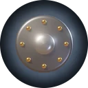
12% increased Armour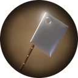
12% increased Damage with Axes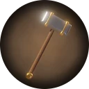
12% increased Damage with Maces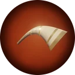
6% increased Warcry Cooldown Recovery Rate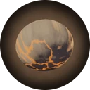
8% increased Armour; 3% increased maximum Life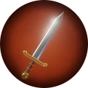
12% increased Damage with Two Handed Weapons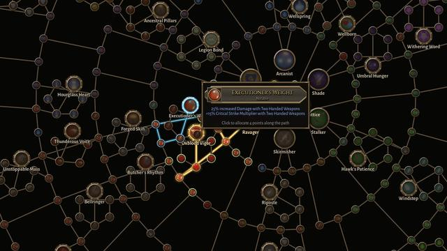
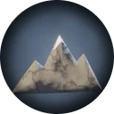
+8 maximum Life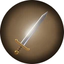
10% increased Damage with One Handed Weapons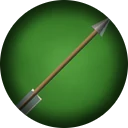
12% increased Bow Damage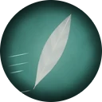
12% increased Evasion Rating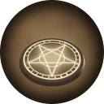
14% increased Trap Damage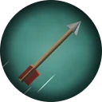
10% increased Projectile Damage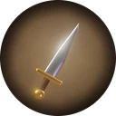
12% increased Damage with Daggers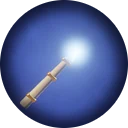
12% increased Damage with Wands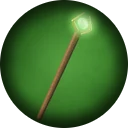
12% increased Damage with Staves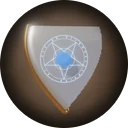
10% increased Armour; 6% increased maximum Ward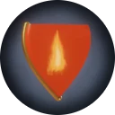
+10% Fire Resistance